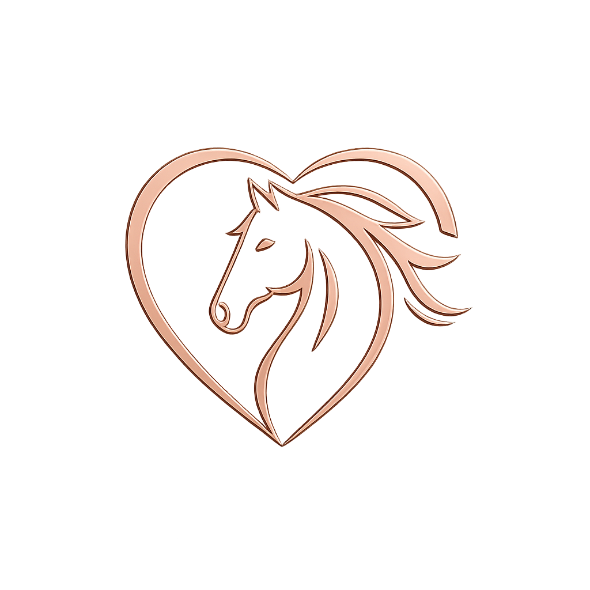

Grass & Track Livery
Our Meet‑a‑Pony sessions offer children a gentle, hands‑on introduction to ponies in a calm, natural environment. These sessions are designed to build confidence, teach basic pony care, and create memorable experiences through grooming, handling, and learning about pony behaviour.
Sessions are fully supervised and tailored to each child’s age and comfort level. Children should be prepared for an outdoor, hands‑on experience — they may get muddy, messy, and covered in pony hair, which is all part of the fun!
£15 per child
Please read the full Terms & Conditions before booking:
Meet‑a‑Pony Terms & Conditions